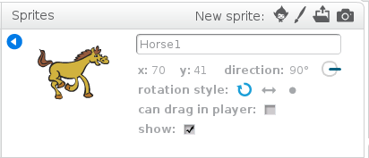
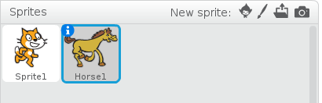

Renaming sprites
Sprites in the Sprite Library come with basic names. You can be creative and give your sprites more exciting names. This will make it easier to tell your sprites apart if you have more than one of the same kind of sprite (e.g. four cats) on the stage. You can change the name of a sprite in an existing project by renaming the sprite.
To rename a sprite
- Open an existing Scratch project with at least one sprite in it.
- From the Sprite list, select the sprite that you want to rename.
- Click the blue ‘i’ button.
- Type a new name for your sprite in the name box. 
- To close the Sprite Information panel, click the blue arrow .
- Click File > Save Now to save your project.
A blue box appears around the selected sprite with a blue ‘i’ button in the upper left corner.
The Sprite Information panel opens.
The Sprite Information panel closes and the new sprite name appears below the selected sprite.
Your project is saved.
Now that you know how to rename a sprite, you can come up with creative names for sprites in all of your Scratch projects. Another way to make your sprites unique is to make changes to their costumes. See Editing sprites to learn how to edit your sprite’s costume.